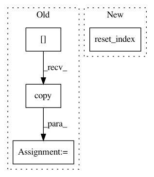

fbd16b4f301f09b8868b60a4762700f3251e2cdc,src/pudl/transform/ferc1.py,,plant_in_service,#Any#Any#,977
Before Change
// organized by the previously reported columns:
categorized_pis = pd.DataFrame()
for category in pis_df.columns.levels[0]:
tmp_df = pis_df.loc[:, category].copy()
tmp_df["amount_type"] = category
categorized_pis = pd.concat([categorized_pis, tmp_df])
categorized_pis.columns.name = None
pis_df = (
After Change
dict: The dictionary of the transformed DataFrames.
pis_df = (
unpack_table(
ferc1_df=ferc1_raw_dfs["plant_in_service_ferc1"],
table_name="f1_plant_in_srvce",
data_rows=slice(None), // Gotta catch "em all!
data_cols=[
"begin_yr_bal",
"addition",
"retirements",
"adjustments",
"transfers",
"yr_end_bal"
])
.pipe( // Convert top level of column index into a categorical column:
cols_to_cats,
cat_name="amount_type",
col_cats={
"begin_yr_bal": "starting_balance",
"addition": "additions",
"retirements": "retirements",
"adjustments": "adjustments",
"transfers": "transfers",
"yr_end_bal": "ending_balance",
})
.rename_axis(columns=None)
.pipe(_clean_cols, "f1_plant_in_srvce")
.set_index([
"utility_id_ferc1",
"report_year",
"amount_type",
"record_id"])
.reset_index()
)
// Get rid of the columns corresponding to "header" rows in the FERC
// form, which should *never* contain data... but in about 2 dozen cases,
// they do. See this issue on Github for more information:
In pattern: SUPERPATTERN
Frequency: 3
Non-data size: 4
Instances
Project Name: catalyst-cooperative/pudl
Commit Name: fbd16b4f301f09b8868b60a4762700f3251e2cdc
Time: 2019-12-05
Author: zane.selvans@catalyst.coop
File Name: src/pudl/transform/ferc1.py
Class Name:
Method Name: plant_in_service
Project Name: J535D165/recordlinkage
Commit Name: 6cb0fdf63db7c5cdf165c5f0c39ef5a68afb3e39
Time: 2015-12-27
Author: jonathandebruinhome@gmail.com
File Name: recordlinkage/indexing.py
Class Name:
Method Name: _blockindex
Project Name: metagenome-atlas/atlas
Commit Name: 3ab0e54a3ce88c7018a34192461dd47e5867d357
Time: 2017-01-28
Author: joe.brown@pnnl.gov
File Name: atlas/tables.py
Class Name:
Method Name: col_split